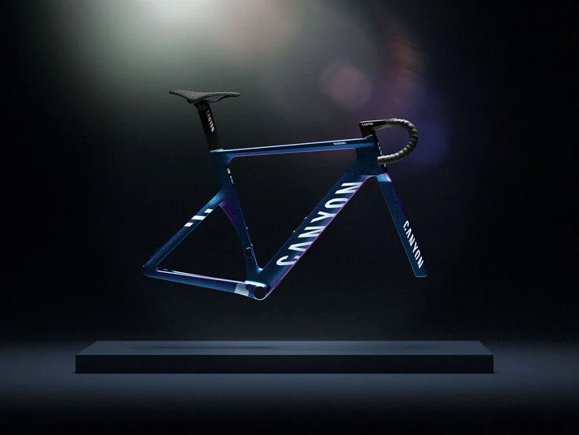

Aucun Canyon n'a jamais bénéficié d'autant de contributions de la part des athlètes. Plus de 50 exigences des coureurs, dont celle de Mathieu van der Poel, ont été prises en compte dans cette quatrième génération d'Aeroad. Les attentes du WorldTour ont été satisfaites par l'effort d'ingénierie pour un vélo qui a été optimisé pour le niveau de performance le plus élevé.
La nouvelle forme dynamique du cadre offre des performances sur tout le vélo. Un tube supérieur plus large augmente la rigidité et l’agilité pour une meilleure maniabilité, tandis qu’une partie avant plus étroite améliore l’aérodynamisme. Il coupe mieux le vent que le dernier Aeroad, et sa composition en carbone a été améliorée pour plus de robustesse.
Nos ingénieurs ont testé l'Aeroad sur les fameux pavés pour développer une nouvelle fourche qui domine les routes les plus accidentées. Un jeu de direction hermétiquement fermé empêche la saleté et l'eau de pénétrer, une selle en titane offre une douceur durable, et l'utilisation de matériaux de la plus haute qualité garantit une résistance à toute épreuve.
Notre nouveau cintre innovant PACE met la vitesse et le confort dans la paume de vos mains. Le design est modulable, ce qui signifie que les cocottes peuvent être séparées du cintre en T et remplacées par une option plus aérodynamique si vous le souhaitez, ou rendues plus étroites ou plus larges en tournant simplement une clé TX25. Tout fonctionne selon un concept « plug-and-play » : les cintres peuvent être échangés sans même avoir à purger à nouveau les freins.